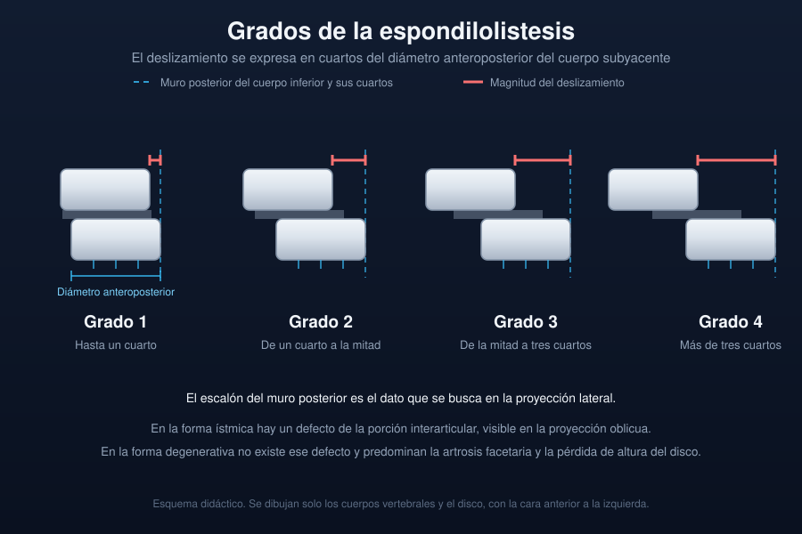

Ficha del catálogo
Espondilolistesis
- Sistema
- Nervioso
- Modalidad
- RX
- Región
- Columna lumbar, unión lumbosacra
- Dificultad
- Básico
La espondilolistesis es el desplazamiento anterior de un cuerpo vertebral sobre el subyacente. Las formas más frecuentes son la ístmica, por defecto de la porción interarticular, y la degenerativa, por artrosis facetaria e inestabilidad. Puede ser asintomática o cursar con lumbalgia mecánica y con clínica radicular o de claudicación neurógena.
Técnica
Radiografía lateral de columna lumbar en bipedestación, complementada con proyecciones oblicuas cuando se busca el defecto de la porción interarticular y con proyecciones en flexión y extensión para valorar movilidad del segmento.
Qué observar
- Escalón entre el muro posterior de la vértebra desplazada y la subyacente
- Magnitud del deslizamiento respecto al diámetro anteroposterior del cuerpo inferior
- Defecto lineal en la porción interarticular en las proyecciones oblicuas
- Cambios artrósicos facetarios y disminución de altura del disco
- Variación del deslizamiento entre flexión y extensión
- Estrechamiento del agujero de conjunción y datos indirectos de compromiso radicular
Hallazgos
En la proyección lateral se aprecia el desplazamiento anterior del cuerpo vertebral con pérdida de continuidad de la línea del muro posterior. En la forma ístmica existe una interrupción de la porción interarticular que en la proyección oblicua se dibuja como una banda que atraviesa el cuello de la figura del perro escocés, y el agujero de conjunción suele adoptar forma alargada. En la forma degenerativa no hay defecto ístmico y predominan la artrosis facetaria, la esclerosis y la reducción de la altura discal.
Perlas
El deslizamiento puede reducirse en decúbito y aparecer solo en bipedestación, de modo que un estudio realizado tumbado puede infravalorar el problema o no mostrarlo. En la forma ístmica el canal tiende a ensancharse porque el arco posterior queda atrás, mientras que en la degenerativa el canal se estrecha, diferencia que explica la distinta clínica de ambas.
Diagnóstico diferencial
- Seudolistesis por artrosis facetaria sin defecto ístmico
- Arco posterior íntegro en las oblicuas y en la tomografía, con predominio de cambios degenerativos facetarios.
- Desplazamiento postraumático
- Existe un trazo de fractura agudo con edema óseo en resonancia y antecedente de traumatismo.
- Espondilolistesis patológica
- Se acompaña de destrucción ósea por tumor o infección, con alteración de la señal en el cuerpo vertebral.
- Retrolistesis degenerativa
- El desplazamiento es posterior y se asocia a colapso discal, con distinta repercusión sobre el agujero de conjunción.
Simuladores
- Proyección oblicua mal angulada que simula defecto ístmico
- Superposición de gas intestinal sobre el arco posterior
- Escoliosis con rotación que altera la valoración del muro posterior
Por modalidad
- TC
- Demuestra con claridad el defecto de la porción interarticular y la artrosis facetaria, y es útil en casos dudosos.
- RM
- Valora el compromiso radicular en el agujero de conjunción, el estado del disco y el edema óseo de las lesiones activas.
Protocolo
Radiografías anteroposterior y lateral en bipedestación, con proyecciones dinámicas en flexión y extensión cuando se sospecha inestabilidad; la resonancia se indica cuando hay clínica radicular o de claudicación para valorar el conflicto neural.
Clasificación
El grado de deslizamiento se expresa en cuartos del diámetro anteroposterior de la vértebra inferior, de modo que el primer grado corresponde a un desplazamiento de hasta la cuarta parte y los grados sucesivos aumentan de forma equivalente hasta el desplazamiento completo. Además se clasifica por su causa, con las formas ístmica, degenerativa, displásica, traumática y patológica.
Errores frecuentes
- Valorar el deslizamiento solo en decúbito y subestimarlo
- Diagnosticar forma ístmica sin comprobar el defecto de la porción interarticular
- No correlacionar el grado radiológico con la clínica antes de proponer tratamiento

espondilolistesis porción interarticular columna lumbar inestabilidad segmentaria radiografía en bipedestación lumbalgia mecánica